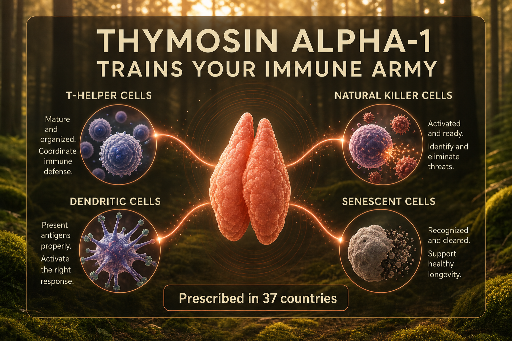

What Thymosin Alpha-1 Is
Thymosin Alpha-1 (Ta1, brand name Zadaxin) is a 28-amino-acid peptide naturally produced by the thymus gland, first isolated in 1972. It has been studied and used clinically for decades - particularly in Asia and Europe - as an immune modulator. Approved in approximately 37 countries for hepatitis B and C treatment and cancer immunotherapy support.
The thymus is the central organ of immune system training - where naive T-cells mature into functional T-cells. Thymosin Alpha-1 is one of the key peptides the thymus produces to regulate T-cell maturation and activity. Thymus function declines significantly with age (thymic involution), and TA1 production declines with it - one reason immune competence decreases as people age.
Importantly for Monica: TA1 has documented relevance for Hashimoto's thyroiditis through its immune modulation of the autoimmune T-cell responses that drive thyroid tissue damage.
Plain English Version
The Training Director for Your Immune Army
Your immune system is a standing army. Soldiers (T-cells) need training. They need to learn which threats to attack, which cells to leave alone, how to coordinate. The thymus is the military academy where T-cells get trained.
When young, the thymus is large and active. By your 40s it has reduced significantly. The training program gets slower. Immune cells that should be retired keep circulating. New threats start slipping through.
Thymosin Alpha-1 is the training director's signal. It does not add more soldiers - it makes existing soldiers better trained and coordinated. It helps T-cells mature correctly, directs the retirement of non-functioning immune cells, and maintains the surveillance capacity that determines how well your body identifies threats - including the early surveillance relevant for cancer prevention.
One sentence: Thymosin Alpha-1 is the thymus's key training signal for immune cells - prescribed in 37 countries for hepatitis, cancer immunotherapy support, and age-related immune decline.
How To Picture It

How It Works
Thymosin Alpha-1 promotes T-cell maturation and differentiation. Enhances T-helper cell activity, natural killer cell function, and dendritic cell antigen presentation. Downregulates immune senescence - the accumulation of non-functional immune cells that chronic inflammation drives. Through these mechanisms it restores immune competence without causing autoimmune activation or excessive stimulation.
Documented Benefits
clinical indication in international markets
alongside chemotherapy to maintain immune function
documented against multiple viral classes
autoimmune T-cell regulation
Dosing Protocol
| Protocol | Dose | Frequency | Duration |
|---|---|---|---|
| Standard | 1.6mg | Twice weekly | 6-12 months |
| Acute | 1.6mg | Daily for 1-2 weeks | Short course during acute illness |
| Maintenance | 1.6mg | Weekly | Long-term ongoing |
| Cancer support | Per oncologist guidance | — | — |
Reconstitution Standard
TA (1.6mg vial) + 1ml BAC water = 1.6mg/ml One full vial = one standard clinical dose = 100 units = 1.0ml Simple: reconstitute and draw the whole vial. One vial, one dose.
Note: No preservative - use within 24 hours of reconstitution.
Dosage Build-Up Timeline
- Week 1-4: 1.6mg twice weekly - standard loading
- Week 5-12: 1.6mg twice weekly - continue
- Week 13-26: 1.6mg weekly - maintenance
- Ongoing: twice-weekly or weekly based on protocol goals
Common Mistakes
CONTRAINDICATED; directly opposes cyclosporine, tacrolimus; could trigger transplant rejection
immune modulation is cumulative over months
completely different compound, mechanism, and application
acute illness is exactly when it matters most
no preservative
Contraindications And Cautions
CONTRAINDICATED; could trigger organ rejection
may reduce effectiveness; discuss timing
discuss with physician
use cautiously; medical guidance needed
insufficient safety data
What To Track
- Illness frequency and severity (monthly)
- Lymphocyte counts and T-cell panels if available through bloodwork
- Energy levels - immune function affects fatigue
- Vaccine response during protocol
- Thyroid markers if relevant: TSH, T3, T4, anti-TPO antibodies (Monica)
- Cancer-related markers if using alongside oncology treatment
Stacks Well With
- Epithalon - complementary longevity pairing; often run in sequential annual courses
- NAD+ - cellular energy supports active immune function
- KLOW - immune modulation plus tissue repair
Sources
- PeptideInitiative Thymosin Alpha-1. peptideinitiative.com
- Zadaxin prescribing info. SciClone Pharmaceuticals. zadaxin.com
- Thymosin Alpha-1 clinical trials. clinicaltrials.gov
- Goldstein AL. History thymosin. Annals NY Academy Sciences. pubmed.ncbi.nlm.nih.gov
- ParticlePeptides TA1 overview. particlepeptides.com
For educational and research documentation purposes only. Not medical advice. Always speak with a qualified healthcare professional before making health decisions.